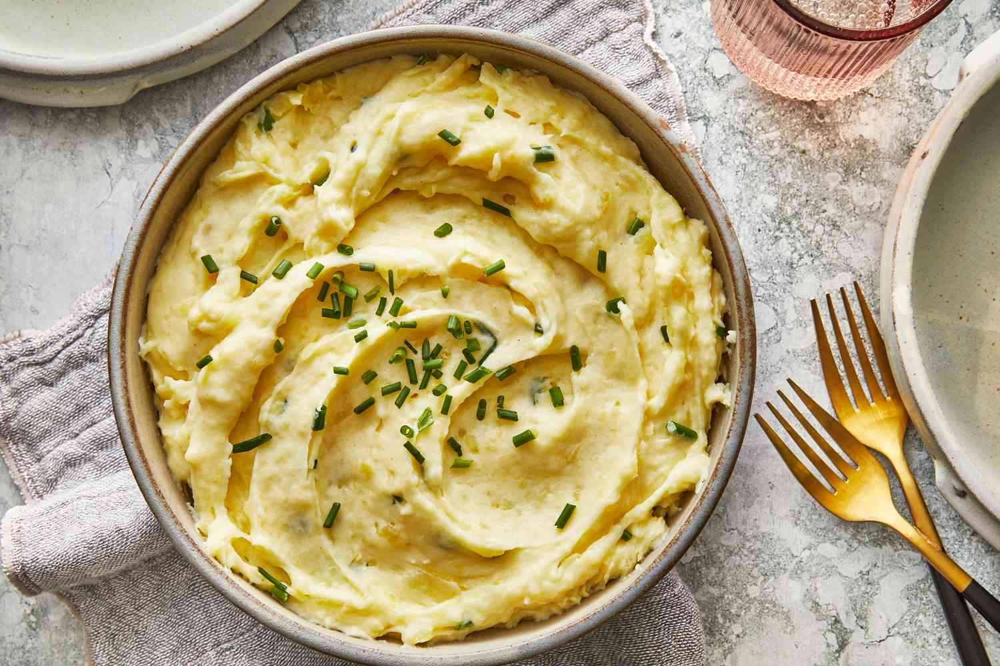

Potatos

Description
This is a potato masterpeice,
do be aware of the sensory
overload which may occur
after consumption.
This is a second paragraph
describing the recipe: they are good
Ingredients
- 2 pounds baking potatoes,
peeled and quartered
- 3 cloves garlic, peeled, or to taste
- 1 cup milk
- 2 tablespoons butter
- salt and ground black pepper to taste
Steps
- Bring a large pot of salted water to a boil.
Add potatoes and garlic, lower heat to medium,
and simmer until potatoes are tender, 15 to
20 minutes.
- When the potatoes are almost finished, heat milk
and butter in a small saucepan over low heat
until butter is melted.
- Drain potatoes and return to the pot. Slowly
add warm milk mixture, blending it in with a
potato masher or electric mixer until potatoes
are smooth and creamy. Season with salt and
pepper.